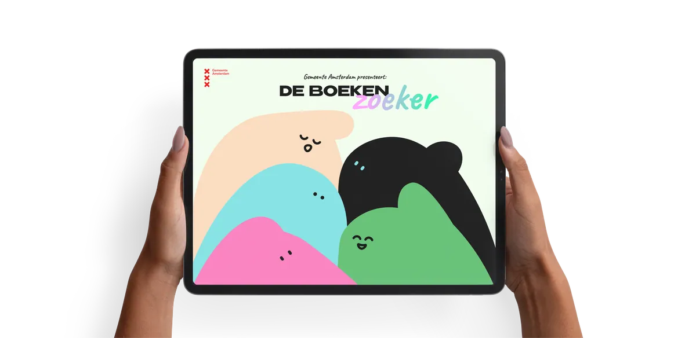
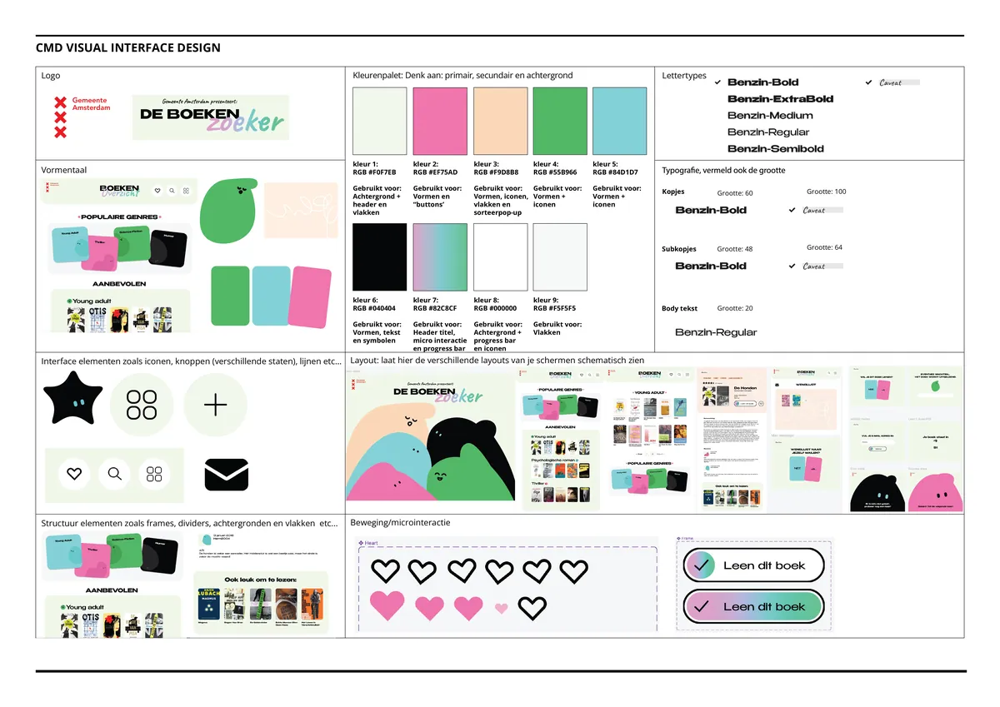
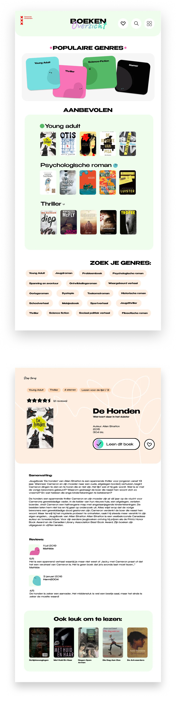
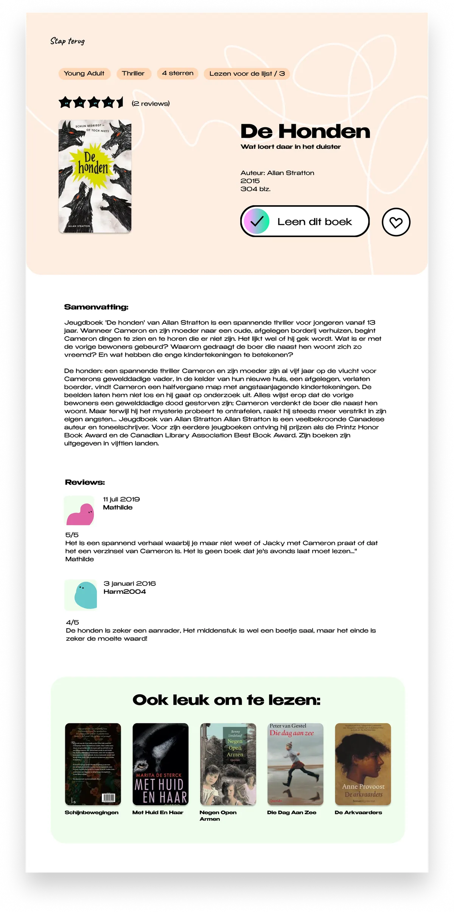

BoekenZoeker Visual interface design
- No.
- 08
- Year
- 2024
- Discipline
- UI Design
- Role
- Visual interface design
- Tools
- Figma
- Format
- iPad interface
- For
- Municipality of Amsterdam

“De BoekenZoeker” for the Municipality of Amsterdam is a visual interface on an iPad, designed for high-school students.
It allows them to easily browse and find interesting books to read in the school library.
Further reading
- View the iteration screens → NL · PDF



Looking back
Designing for a shared iPad in a middle school library meant every screen had to be understood at a glance. In my second version I scrapped the start button altogether: you simply touch anywhere to begin, and after a minute without interaction it quietly resets.
I kept to one primary action per screen, gave each type of book its own colour so you always know where you are, and used a drag gesture to confirm borrowing. The little characters from my house style look downwards to nudge you to scroll, a small detail that does a lot of work.